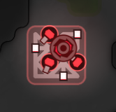

该 NPC 建筑是 NPC 要塞的控制中心，并且也统治着本区块中的所有入侵者。它会孵化要塞中的 NPC 守卫，重新装填 tower 以及修复建筑。 当它存在的时候，本区块中的所有房间都将会生成入侵者。它其中也储藏着一些有价值的资源，当您摧毁该建筑时，就可以从它的废墟（ruin）中搜刮这些资源。
一个入侵者核心 (Invader Core) 包含两个生命周期阶段：部署阶段和活动阶段。当它刚刚出现在本区块的某个随机房间中时，会包含一个 ticksToDeploy 属性，
周围在其周围的开放 rampart，并且也不会执行任何操作。在该阶段中，它将无法被攻击 (效果 EFFECT_INVULNERABILITY 生效)。当 ticksToDeploy 计时器结束的时候，它将解除无法被攻击的状态，并会在周围生成建筑和孵化 creep。与此同时，它将获得 EFFECT_COLLAPSE_TIMER 效果，在该计时器结束时，该要塞将会被移除。
一个活动的入侵者核心会在其相邻的中立房间中生成等级为 0 的小型入侵者核心。这些较小的核心会出现在房间控制器的附近，并且只会攻击（attack）和预定（reserve）房间控制器。一个入侵者核心一生中最多只能产生 42 个小型核心。
| 生命值 | 100,000 |
| 部署时间 | 5,000 ticks |
| 活跃时间 | 75,000 tick 以及 10% 的随机浮动 |
| 小型核心生成间隔 |
要塞等级 1: 4000 ticks 要塞等级 2: 3500 ticks 要塞等级 3: 3000 ticks 要塞等级 4: 2500 ticks 要塞等级 5: 2000 ticks |
附加的效果，一个包含如下属性的对象数组：
| parameter | type | description |
|---|---|---|
effect | number | 该附加效果的 ID。可以是自然效果 ID 或者 Power ID。 |
level (可选) | number | 该附加效果的 Power 等级。如果效果不是 Power 效果则不存在该属性。 |
ticksRemaining | number | 多长时间之后会失去这个效果。 |
表示该对象在房间中的坐标的对象。
Room对象的链接。如果对象是标志或工地并且放置在你不可见的房间中，则可能为undefined。
当前这个建筑的当前生命值。
这个建筑的最大生命值。
一个唯一的对象标识。你可以使用Game.getObjectById方法获取对象实例。
STRUCTURE_*常量之一。
立即摧毁这个建筑。
如下错误码之一：
| constant | value | description |
|---|---|---|
OK | 0 | 这个操作已经成功纳入计划。 |
ERR_NOT_OWNER | -1 | 你不是这个建筑的拥有者。 |
ERR_BUSY | -4 | 敌对creep在这个房间中。 |
检查这个建筑是否可用。如果房间控制等级不足，这个方法会返回false，并且这个建筑会在游戏中红色高亮。
布尔值。
切换这个建筑受到攻击时的自动通知。通知会发送到你的账户邮箱。默认开启。
| parameter | type | description |
|---|---|---|
enabled | boolean | 是否启用通知。 |
如下错误码之一：
| constant | value | description |
|---|---|---|
OK | 0 | 这个操作已经成功纳入计划。 |
ERR_NOT_OWNER | -1 | 你不是这个建筑的拥有者。 |
ERR_INVALID_ARGS | -10 |
|
是否是你拥有的建筑。
建筑拥有者信息，一个包含如下属性的对象：
| parameter | type | description |
|---|---|---|
username | string | 拥有者姓名。 |
此要塞的等级。该等级也决定了战利品的数量和质量。
部署阶段的计时器，在要塞尚未部署完成时显示，否则为 undefined。
如果该核心正在孵化一个新的 creep，该属性将会包含一个 StructureSpawn.Spawning 对象，否则将为 null。